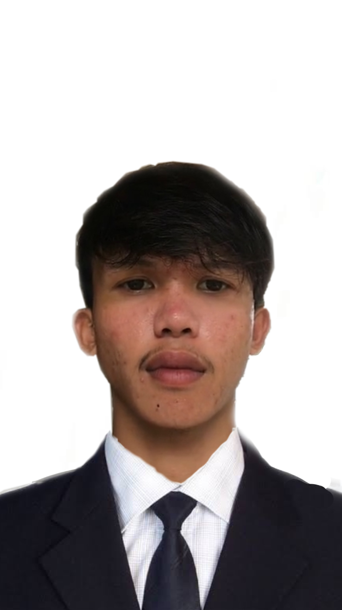

About Me
Hi, I’m Kairu Jion. I’m someone who finds inspiration in creativity, curiosity, and the little things that make life interesting. Music is a huge part of who I am whether I’m listening to it or singing, it’s one of the ways I express myself most naturally. I also enjoy watching movies, getting lost in stories, characters, and different worlds. Beyond that, I love exploring the internet. There’s always something new to discover, learn, or experience, and diving into different online communities and ideas keeps me inspired and curious. I come from a big family the fourth son out of nine children which has shaped a lot of my personality. Growing up around so many siblings gave me a strong sense of individuality, patience, and connection. It also taught me how to appreciate different perspectives and find my own voice. Overall, I’m someone who enjoys creativity, discovery, and expressing myself through music and storytelling. I’m always exploring, always learning, and always growing.